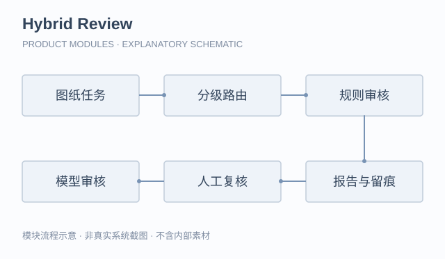

AI 审图平台
立项发起 · 核心产品模块设计与上线 · 已上线 · 业务使用与持续迭代
负责机电图纸 AI 审图平台的产品设计，包括审核端界面、混合审核策略、账号与权限、数据看板等核心模块，推动系统上线并投入业务使用，同时基于真实使用数据持续监控和迭代升级。
项目成果
- 产品设计与上线：完成审核工作台、任务流转、人工介入、问题清单、报告导出及数据看板设计，推动业务使用。
- 审核策略：梳理并结构化 11 条规则，设计 9 条模型审核 Prompt，按条目类型与风险分级路由，结合专家知识和人工复核。
- 反馈闭环：基于 6 轮、300+ Badcase 复盘迭代规则、Prompt 与知识召回；人工复核打回率低于 1%。
场景与产品职责
机电图纸审核涉及专业规范、不同类型审核条目与风险差异，需要把任务提交、规则和模型审核、人工复核及报告输出组织为可追踪的产品流程。
审核工作台
完成任务提交、审核进度跟踪、人工介入、问题清单、报告导出和数据看板等前端模块的产品设计，明确提交、审核、复核、导出等不同角色的操作路径，并推动产品上线。
混合审核策略
根据审核条目的类型和风险差异，设计“规则审核＋模型审核”的混合审核策略。在规则审核中，完成 11 条规则的梳理、结构化与录入；在模型审核中，基于专家知识库与图纸上下文完成 9 条规则的 Prompt 设计，并设计分级路由，让不同类型条目进入对应审核策略，降低漏检和误报。
账号与权限
设计管理员、审核人员、复核人员等角色的权限边界，覆盖任务分配、结果查看、人工复核和规则维护等操作；增加操作留痕，保证审核过程和结论可追溯。
数据监控与策略调优
设计全链路数据埋点，持续监控任务提交量、审核完成情况、人工介入率和复核结果；基于人工打回数据与专家进行问题分析和定位，通过 6 轮、300+ 个 Badcase 的复盘，持续优化 Prompt、专家知识库召回策略和审核规则，最终实现人工复核打回率低于 1%。
关键取舍
- 按条目类型和风险分级路由，不将全部审核交给单一模型。
- 将专家知识、图纸上下文与人工复核组合，保留判断理由和操作轨迹。
- 把人工打回作为迭代线索，持续优化规则、Prompt 与知识库召回。
产品流程示意（非系统截图）

证据与公开边界
上线与指标依据本人提供的履历；原始图纸、内部系统、代码及统计记录未公开。打回率的统计时间、分母及基线未提供，不将其改写为准确率、召回率或降本收益。
公司归属和工作经历性质经本人确认。正式职位、团队和日期未提供，不补写。所有职责与指标为本人提供并确认可公开的履历；本页不公开内部代码、图纸、客户数据、真实系统截图或原始统计。